Welcome to Arkin's Website
Learn MorePersonal Space
Personal Details
I am Arkin, currently 14 years old whose birthday is December 4, 2010, Im a student who loves learning, creating, and adventuring. My favorites are eating, sleeping, and genuinely spending time out with my friends because they are the ones who make my life happy. I wouldn't be who I am if it wasn't for my friends they make my life enjoyable.
Circle of Friends (Mixue Ice Cream & Tea)
My friends are very important to me, they've seen every side of me. We've all been together since the 8th grade and we always do things together. My most memorable moment was them was everytime we all spend time together either in school or outside because if im with them im always happy and they make every moment memorable.
My Family
My biggest source of support and inspiration comes from my family. They help me grow as a person and teach me the importance of patience, kindness, and respect. My family always likes to travel and whenever there is a family event everybody is always laughing and having fun. Our most recent family gathering was in Cagayan where we went out to go island hopping the gathering was overall very fun because i got to spend time with my family before going back to school.
Quarter 2
Buwan ng Wika
What is the most important thing I learned from the event?: The most important thing I learned was to appreciate and value our Filipino language and culture because it shows who we are as a country.
How can I apply what I learned in real-life situations?: I can use our national language more often and promote it when communicating with others, especially in school or public places.
Did I actively participate in the event? How?: Yes, I participated by joining the activities and wearing traditional Filipino attire to show my support for the event.
If I were to teach this topic/subject to a classmate, how would I explain it?: I would explain that Buwan ng Wika is about celebrating our language, identity, and pride as Filipinos through creative and cultural activities.
Why is it important to have an event (per subject)? Explain your answer.: It helps students connect lessons to real life, develop cultural appreciation, and strengthen their sense of national pride.
INTRAMS
What is the most important thing I learned from the event?: I learned the importance of teamwork, discipline, and sportsmanship whether we win or lose.
How can I apply what I learned in real-life situations?: I can apply it by cooperating with others in group work and being respectful even in competition.
Did I actively participate in the event? How?: Yes, I joined in Green Volleyball Men's Team and i was also cheering and helping organize our team during the games.Yes, I helped in setting up our class project which was the WINS Corner and helped to maintain our classrooms cleanliness.
If I were to teach this topic/subject to a classmate, how would I explain it?: I would explain that Intrams is about developing physical skills and unity among students through sports and friendly competition.
Why is it important to have an event (per subject)? Explain your answer.: It encourages teamwork, builds school spirit, and promotes physical health and discipline among students.
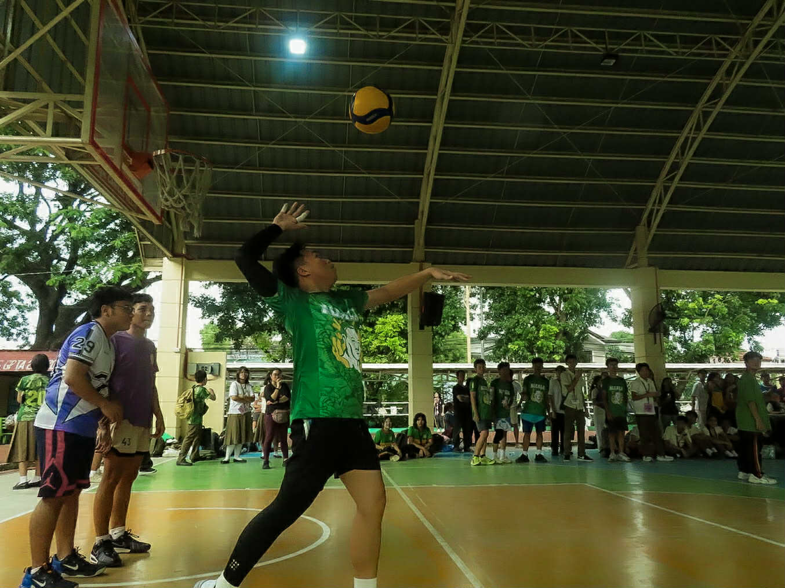
SCIENCE MONTH
What is the most important thing I learned from the event?: I learned that science helps us understand the world and create solutions for real-life problems.
How can I apply what I learned in real-life situations?: I can apply it by respecting our country’s heritage and staying informed about national issues.
Did I actively participate in the event? How?: Yes, I helped in setting up our class project which was the WINS Corner and helped to maintain our classrooms cleanliness.
If I were to teach this topic/subject to a classmate, how would I explain it?: I would explain that Science Month promotes creativity, discovery, and environmental awareness through fun activities.
Why is it important to have an event (per subject)? Explain your answer.: It makes learning more exciting and helps students see how lessons are used in the real world.
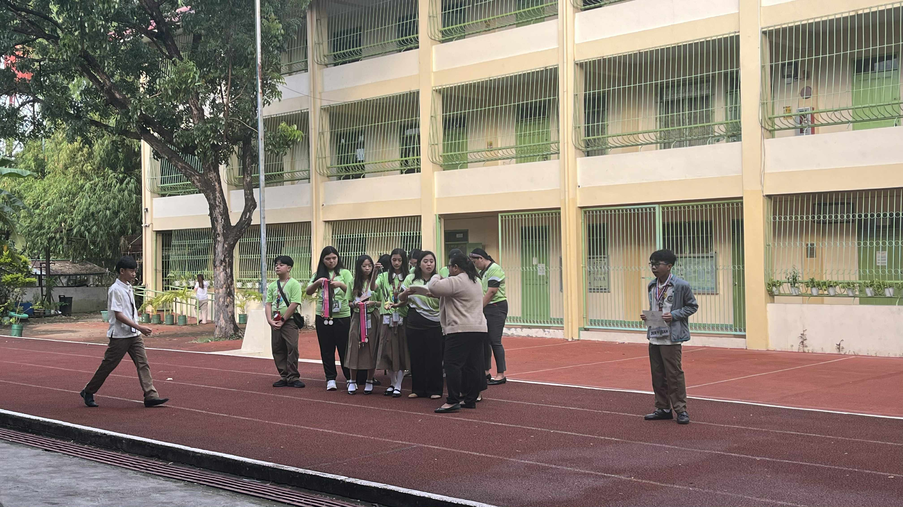
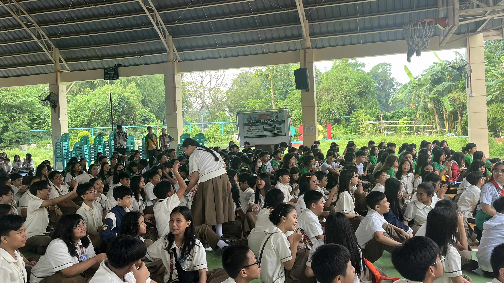
AP MONTH
What is the most important thing I learned from the event?: I learned how our history and culture shape our identity and how we can be responsible citizens.
How can I apply what I learned in real-life situations?: I can apply it by respecting our country’s heritage and staying informed about national issues.
Did I actively participate in the event? How?: Yes, I participated and watched the presentations related to history and culture.
If I were to teach this topic/subject to a classmate, how would I explain it?: I’d explain that AP Month helps us appreciate our past and understand our role in shaping the future.
Why is it important to have an event (per subject)? Explain your answer.: It deepens students understanding of history and encourages patriotism and awareness.
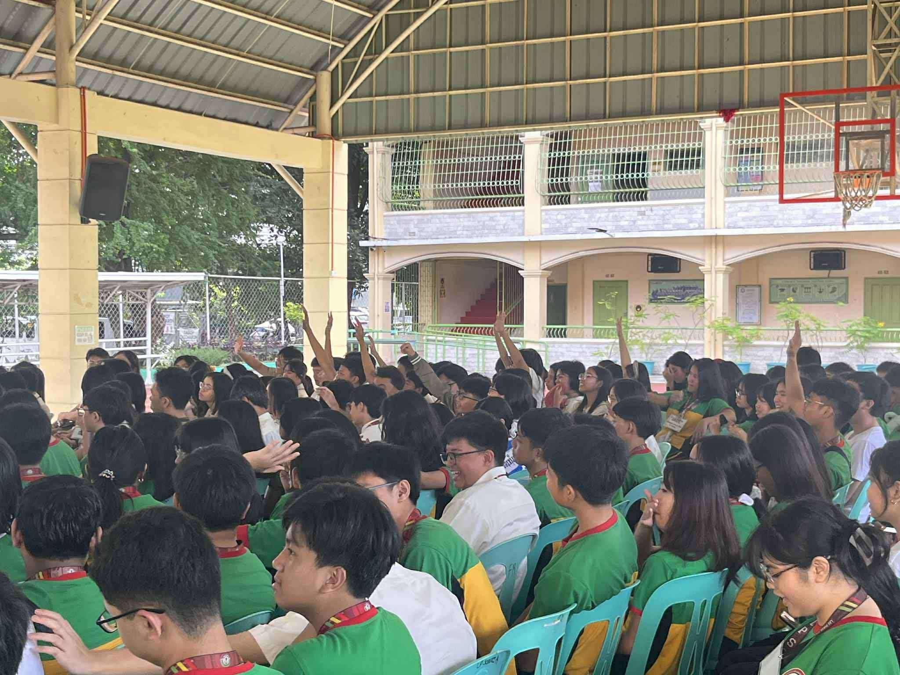
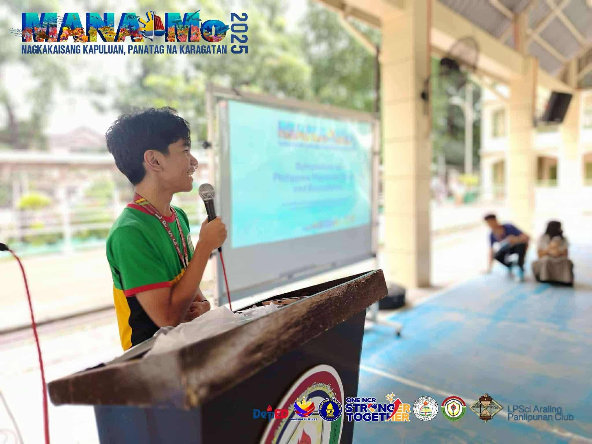
TEACHER'S DAY
What is the most important thing I learned from the event?: I learned the value of showing appreciation and gratitude to our teachers who guide and inspire us every day.
How can I apply what I learned in real-life situations?: I can express gratitude regularly by being respectful, cooperative, and thankful toward my teachers.
Did I actively participate in the event? How?: Yes, I participated by joining performances and helping prepare gifts for teachers.
If I were to teach this topic/subject to a classmate, how would I explain it?: I would explain that Teacher’s Day is about recognizing the hard work and dedication of teachers who shape our future.
Why is it important to have an event (per subject)? Explain your answer.: It helps build appreciation, strengthens relationships between students and teachers, and reminds us to value education.
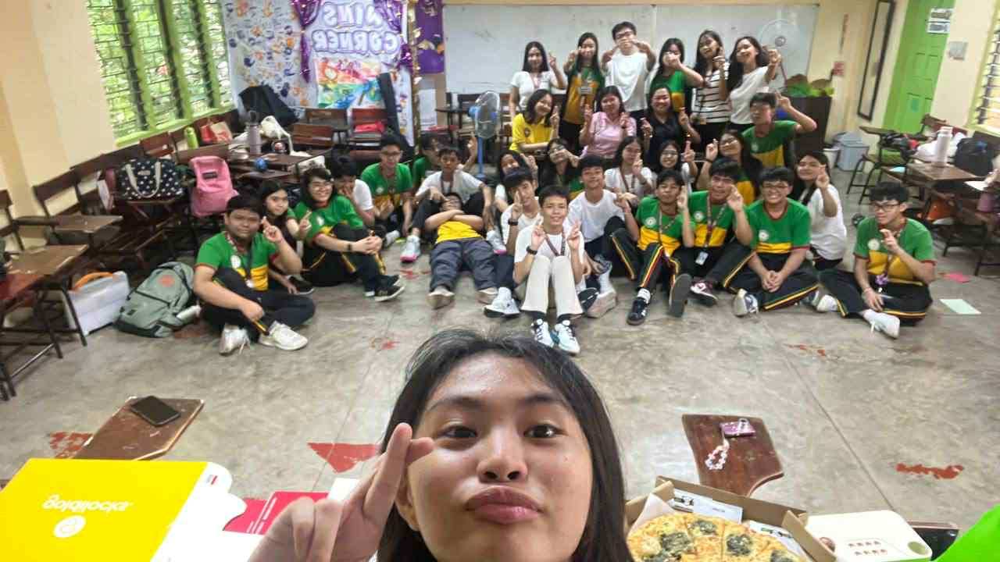
CLUSTER MEET
What is the most important thing I learned from the event?: I learned that sportsmanship, teamwork, and respect are more important than winning. Competing with students from other schools helped me realize that true success is about giving your best and showing discipline.
How can I apply what I learned in real-life situations?: I can apply it by being cooperative and respectful in any competition or group activity, knowing that teamwork and effort matter more than the outcome.
Did I actively participate in the event? How?: Yes, I participated by supporting our athletes and helping organize materials for our school’s team. I also cheered for our players to boost their morale.
If I were to teach this topic/subject to a classmate, how would I explain it?: I would explain that Cluster Meet is an interschool event where students compete in various sports, helping them develop physical strength, discipline, and friendship with others.
Why is it important to have an event (per subject)? Explain your answer.: It’s important because it promotes unity, sportsmanship, and school pride while giving students a chance to represent their school and learn life lessons through competition..
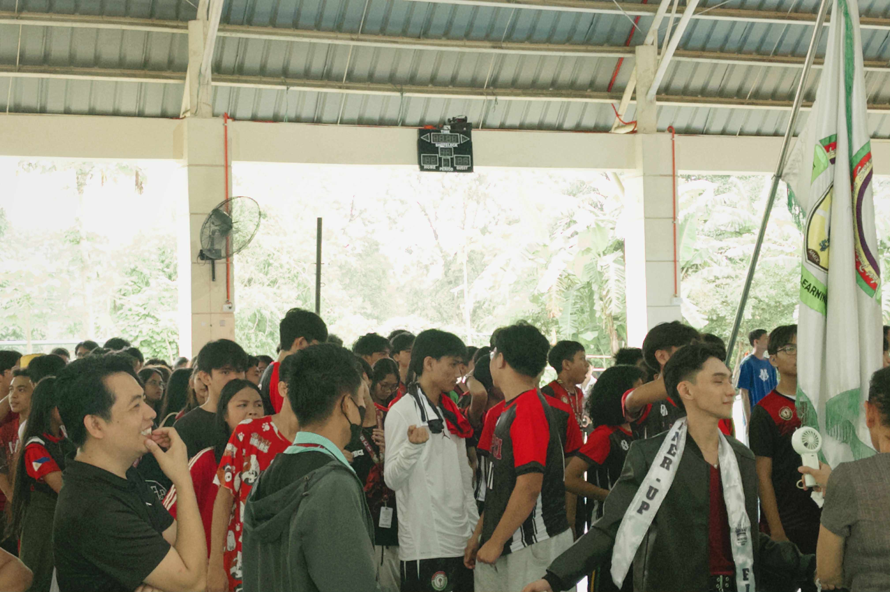
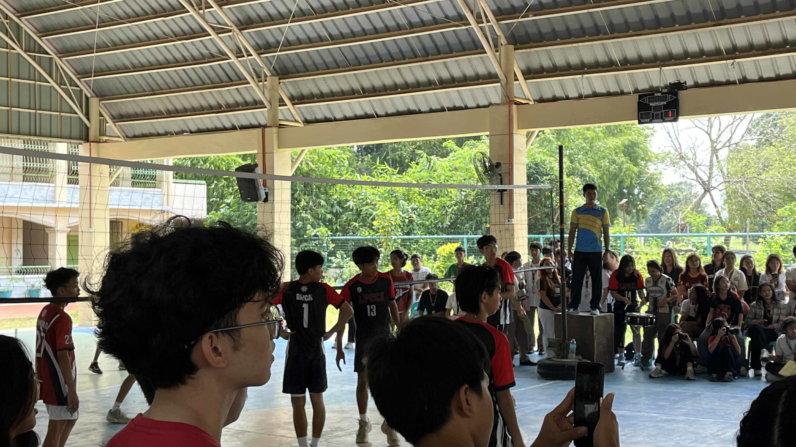
TLE/ICT Lessons
What is CSS?
Cascading Style Sheets (CSS) helps distinguish between content and design and specifies how HTML elements appear on screens. It facilitates consistent styling and upkeep of websites.
Why Make Use of CSS?
- Regulates fonts, colors, and layout.
- Maintains page-by-page consistency in design.
- Reusable styles save time.
- Makes websites accessible and responsive.
A webpage's layers include:
- Content Layer (HTML): Information and structure
- Presentation Layer (CSS): Visual style and design
- Behavior Layer (JavaScript): User actions and interaction
Advantages of CSS
- Reduces repetitive coding and saves time
- Simple updates and upkeep
- Enhances the look and design of websites
CSS Capabilities
- Quickly update layouts
- Manage elements’ positions and layers
- Create custom effects and tags
Benefits of CSS
- Easier updates and quicker loading
- Reusable for several pages
- Adaptable and easy to use
1. Inline CSS
Inline CSS is written directly inside an HTML tag using the style attribute. Only that particular element is affected. It is quick for small changes but not recommended for large websites.
Example: <p style="color: pink; text-align: center;">Hello World</p>
2. Internal CSS (Embedded)
Internal CSS is written inside a <style> tag within the <head> section of the HTML. It applies to the whole page and is easier to manage than inline CSS.
Example: <style> p { color: blue; } </style>
3. External CSS
External CSS is written in a separate .css file and linked to the HTML using a <link> tag. This is the most efficient method for multi-page websites.
Example: <link rel="stylesheet" href="style.css">
Benefits of Each Type
- Inline: Fast and element-specific.
- Internal: Easy to style a single page.
- External: Ideal for multi-page consistency and reusability.
Reflection
I learned about the div and span tags, as well as the block-level and inline-level elements. Inline elements, such as span or a tags, only use the space required, whereas block-level elements, such as div or p, fill the entire width of the webpage. i also learned that large sections can be grouped using the div tag, while smaller sections like text phrases can be styled within a line using the span tag.
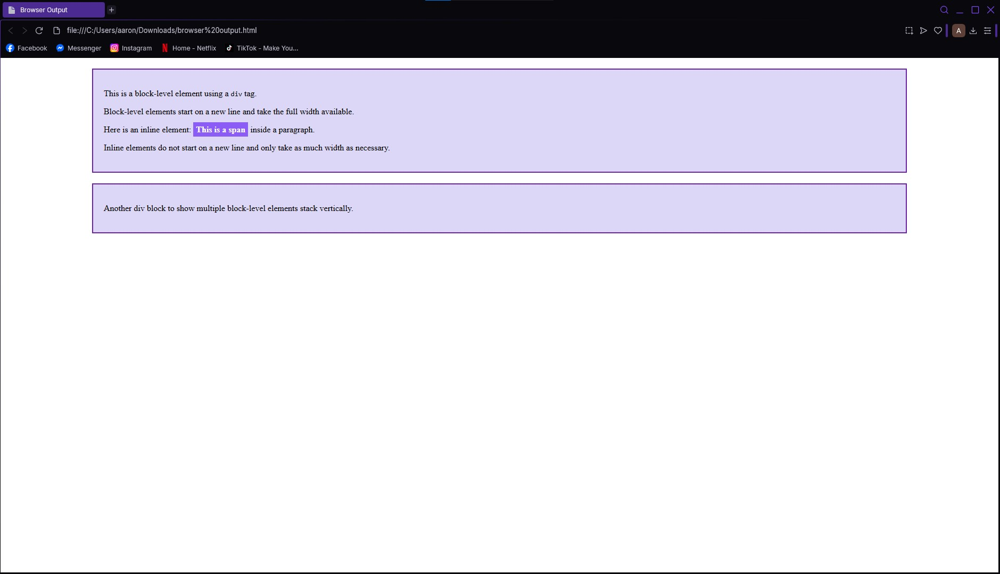
Reflection
I learned that you can use the same rule to style multiple elements by using classes and class selectors. using HTML, a class is applied using the class attribute and uses a period before the attribute. One style can be applied to many elements at the same time, which helps to save time and easily manage codes
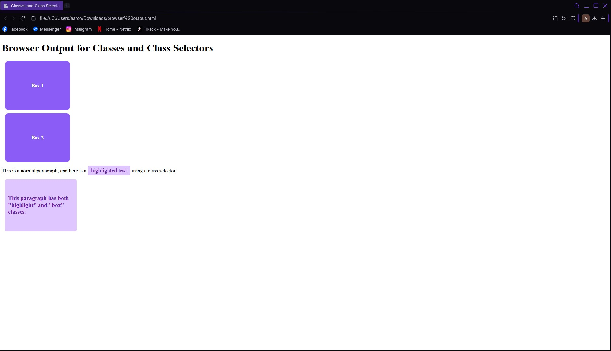
Reflection
In Lesson 5, I learned about CSS selectors, which are used to change and style HTML elements. I learned about different kinds of CSS Selectors like element, class, ID, universal, group, and attribute selectors. These different types of selectors make it possible to apply styles efficiently and consistently to different parts of a webpage, depending on what needs to be styled.
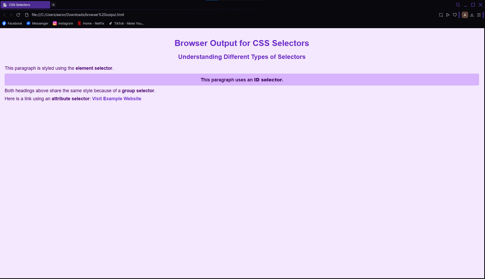
Reflection
Finally, in Lesson 6, I learned about setting dimensions, pseudo-classes, and link properties. I learned how to set the width and height of elements, use pseudo-classes like :hover, :active, and :visited to create effects, and style links to improve design. generally, these lessons help make web pages both functional and visually appealing.
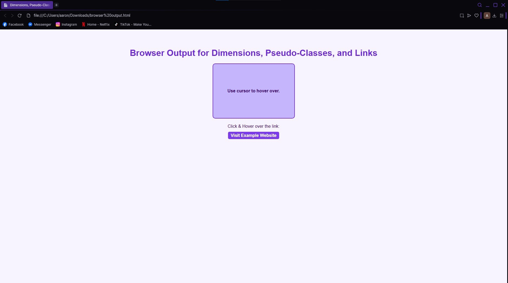
Browser Output
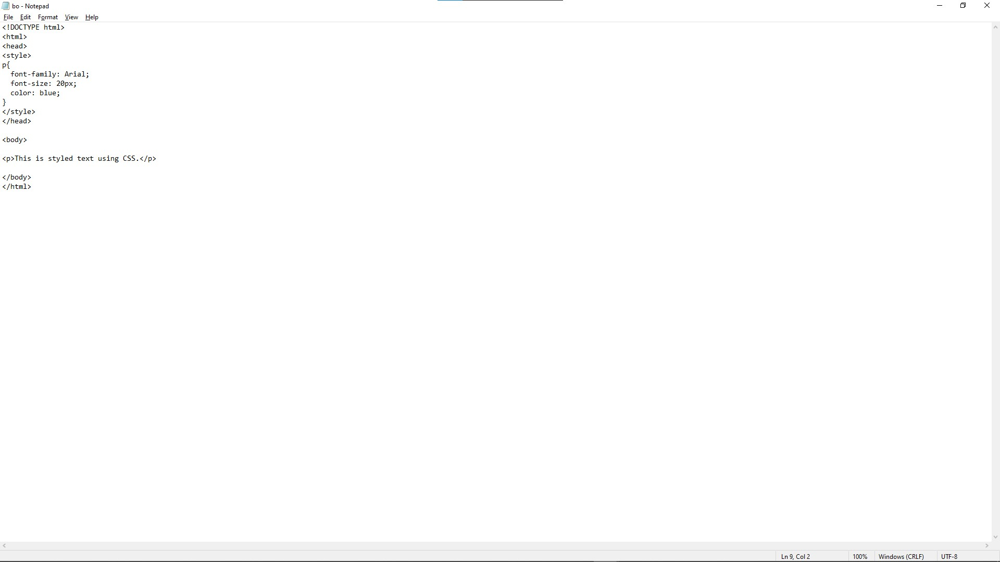
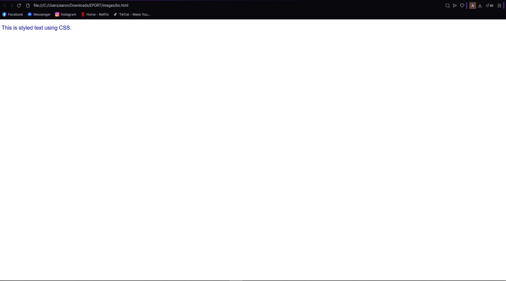
Browser Output
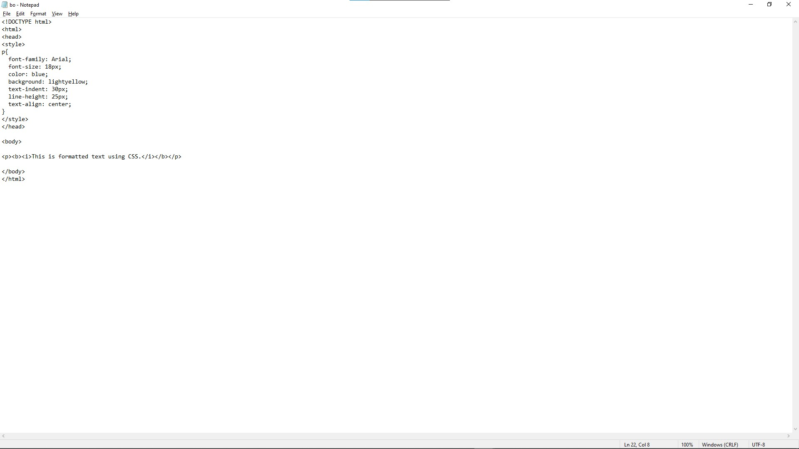
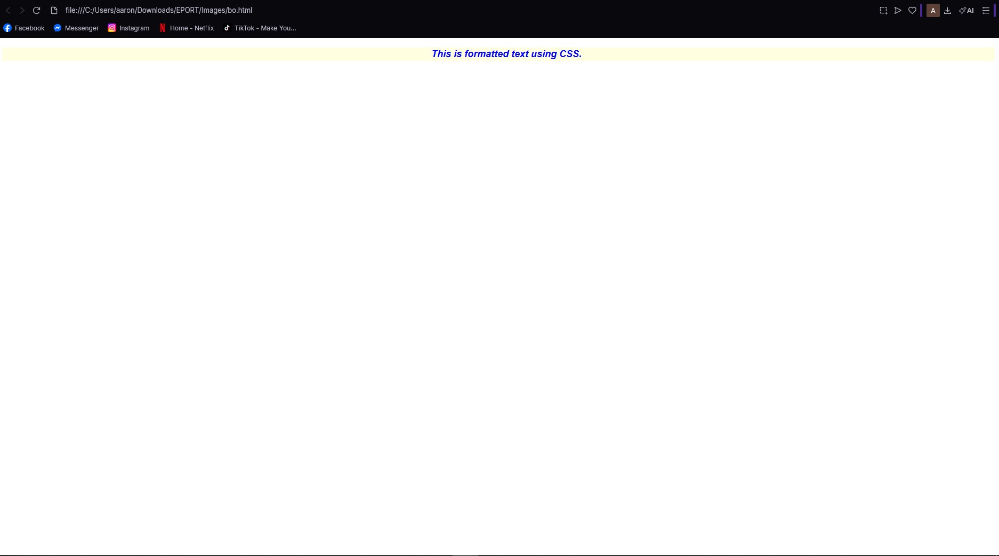
Browser Output
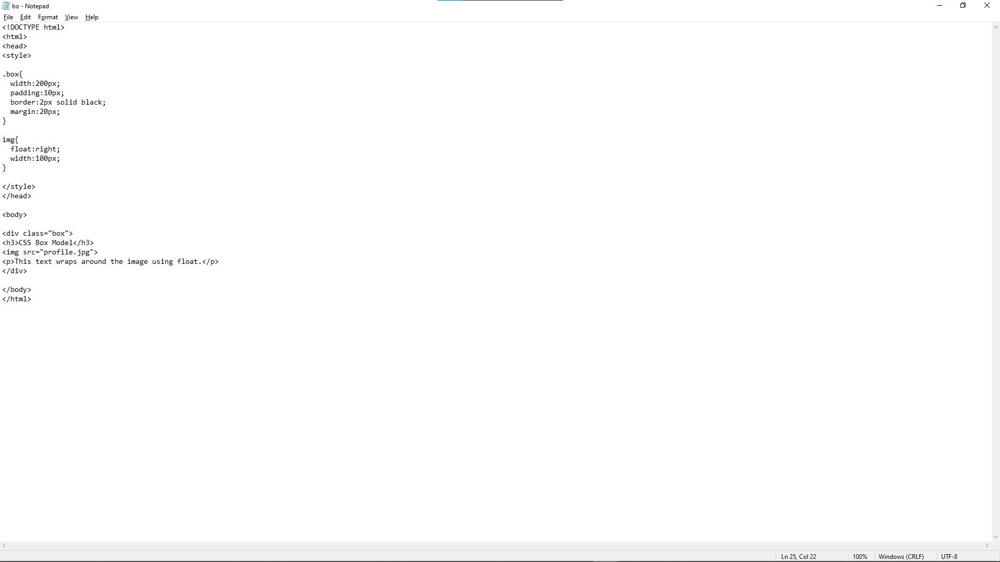
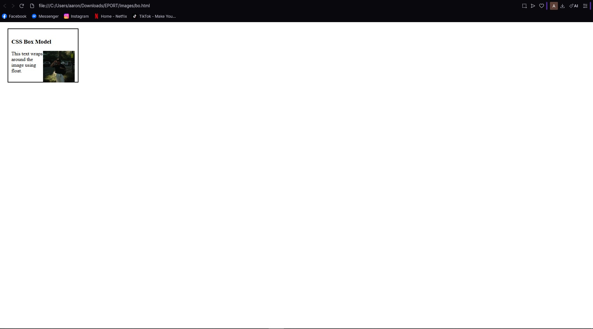
Lesson 1
Purpose
To create dynamic, interactive user experiences, handling everything from UI rendering (like React for Facebook) and content loading to real-time updates, personalized feeds, video controls (captions, volume), and tracking user activity (Meta Pixel).
Examples
Static Website
A static web page, sometimes called a flat page or a stationary page, is a web page that is delivered to a web browser exactly as stored.
Example: Photographer’s portfolio
VS
Dynamic Website
A dynamic website is a type of website that displays different content and interacts with users based on their actions, preferences, or other variables.
Example: Social Media Platforms
JavaScript
- The MOST popular & widely used scripting language on the internet.
- Recognized & works in all major browsers.
- Developed by Brendan Eich of Netscape under the name Mocha, which was later renamed to LiveScript.
- Opened to Internet Explorer in 1996.
- Enhances webpages and can be used to build video games.
- A trademark of the Oracle Corporation and is licensed for use to other entities like Mozilla Foundation.
JavaScript Description
- A client-side, high-level scripting, interpreted & object-oriented.
- Client-side – the codes and formulas are processed right on the user’s own computer.
- High-level scripting – codes are written in words that are close to English as possible.
- Interpreted – the program is passed as source code then converted into machine code.
- Designed to add interactivity and functionality to the Web site. Thus making the contents more dynamic and the elements are enhanced.
- Case-sensitive.
- Semi-colons at the end if each statement are not required.
What can JavaScript do?
- Can react to events – certain events such as mouse clicks, and pre-loading of webpage can lead to executing codes written in JavaScript.
- Can be used to validate data.
- Can be used to create cookies.
- Can enhance a webpage.
Events
These are mouse clicks, and pre-loading of webpage that can lead to executing codes within JavaScript.
Form Validation
A form requires user input, instead of using server-side scripting, JavaScript can be used to validate it and thus save processing time.
Cookies
Used to save or retrieve information from a visitor’s computer. This can be used to monitor the visitor’s internet habit and preferences.
Examples of JavaScript Usage
- Google Search Engine – JavaScript is used extensively in the Google search engine for real-time updates and efficient query handling.
- YouTube – This popular video platform uses JavaScript for seamless, uninterrupted music and video streaming, dynamic content, and drag-and-drop functionality for playlists.
- Social Media Platforms – rely on JavaScript for features like real-time content updates, infinite scrolling, and interactive menus. Facebook even developed its own JavaScript framework called React.
Features of JavaScript
- Supports all structured programming syntax in C.
- Has dynamic typing, the value of the variable is dependent on what the value was assigned to it even during run time, the type can still change.
- Can run locally in a Web site, so interaction within the user and the site is faster or more responsive.
- Can detect user actions, such as mouse clicks, which HTML could not do alone.
- Can be combined with CSS to produce DHTML. DHTML can make site more flexible by adding effects such as message scrollers, mouse trails and falling snow.
Characteristics of JavaScript
- Lightweight programming language
- Inserted into HTML pages
- Supported by all modern web browsers
- Easy to learn and encoder-friendly
- Quick to download effects
- No need for any extra tools to write
- License-free
- Has a thriving and supportive online community of JavaScript developers and information resources
Disadvantages of JavaScript
- Some browsers do not support JS. Examples are PDA and mobile phones do not execute JS. Some browsers disable execution of JS as a security precaution.
- Any secret embedded in JS could be extracted by a determined adversary.
- JS and DOM (Document Object Model) provide potential for malicious authors to deliver scripts to run on a client computer via web.
- Web site authors cannot perfectly conceal how their JS operates because the code is sent to the client.
- Source codes that have been deliberately made hard to understand can be reverse engineered so your codes are still exposed to possible threat.
Note
A script is a set of computer instructions or commands that puts together or connects existing components to accomplish a new related task.
JavaScript is a powerful scripting language used to create web functionalities.
A text editor and a web browser are the tools needed in JavaScripting.
The basic components of JavaScript language are objects, methods and properties.
How to start using JavaScript
<script></script> is used to connote JavaScript. We use the type attribute to define the scripting language and identify its version.
To display an output in a web page, the document.write command should be used.
Browser Output
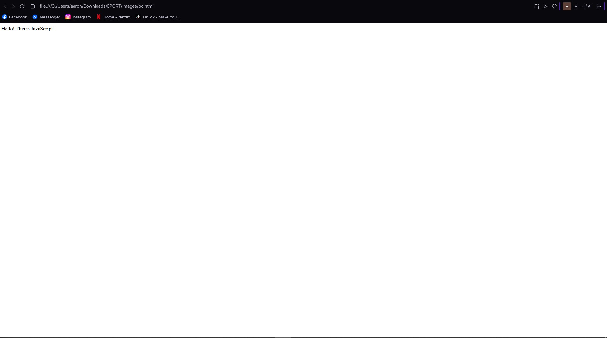
Lesson 2
Where can you place Scripts?
There are times when we want to execute the codes depending on the situation. It could be pre-loaded, or to be triggered whenever an event happens. This is possible in JavaScript. You can control the execution of the codes by placing it in different sections of the HTML file.
HEAD
Whenever the scripts are placed here, you are assured that they will be pre-loaded – it means the scripts will be executed before anyone triggers an event. Scripts are ideally placed here are for functions calls.
<!DOCTYPE html>
<html>
<head>
<title>JavaScript</title>
<script type="text/JavaScript">
function ()
{alert("Welcome Visitor!");}
</script>
</head>
<body onload="intro()">
</body>
</html>
BODY
Scripts that are placed here are executed when the page loads.
<!DOCTYPE html>
<html>
<head>
<title>JavaScript</title>
</head>
<body>
<script type="text/JavaScript">
document.write ("Message by JavaScript");
</script>
</body>
</html>
HEAD & BODY
You can place your script tags whenever and how many you want to.
<!DOCTYPE html>
<html>
<head>
<title>JavaScript</title>
<script type="text/JavaScript">
document.write ("Head Section");
</script>
</head>
<body>
<script type="text/JavaScript">
document.write ("Body Section");
</script>
</body>
</html>
EXTERNAL JAVASCRIPT
External JavaScript files are helpful especially if you are using them to control different HTML files. There is no need to rewrite them all over again. Save the file having an extension of .js.
To use the JavaScript file, all you have to do is use the src attribute and provide the destination of the file.
<script type="text/JavaScript" src="myJavaScript.js"></script>
The src attribute will point to the source of the JavaScript external file. Take note that the JavaScript file does not contain the opening and closing script tags.
Comments in JavaScript
There are times when you want to add a statement to explain a set of codes, or when we want to omit certain codes for debugging purposes, this can be done by inserting a comment.
For single comments, you can use two backlash symbols; for multiple line or block comments, start with a /* and end with a */.
<!DOCTYPE html>
<html>
<head>
<title>JavaScript</title>
</head>
<body>
<script type="text/JavaScript">
document.write ("My comment");
// This is a single line comment
/* This is a
multiple line comment */
document.write ("Their comment")
</script>
</body>
</html>
What are the JavaScript Guidelines?
In coding JS, it is important to know the Do’s and Don’ts. This will save you time and keep you away from trouble in case errors occur.
Listed below are the guidelines.
- Case Sensitive
- White Space
- Breaking up of code lines
1. Case Sensitive
You must be careful in naming your variables. The variable myHome is not equal to MyHome.
It is important to keep track of your variables so there won’t be problems in calling variables, objects or functions.
Unlike in HTML, uppercase letters are not equivalent to lowercase letters in JavaScript.
2. White Space
JavaScript ignores white space as long as it is within the line of the code. It is a good practice to use white spaces between expressions to make your codes easier to read.
var name = "Grace" var name="Grace"
These two variable declarations are accepted.
3. Breaking up of codes
You can break a code line by using a backslash ('\'). However, do not break the code in between commands or else it will not work properly.
document.write("wow\Philippines"); // Accepted
document.\write("wow Philippines") // Not accepted
Browser Output
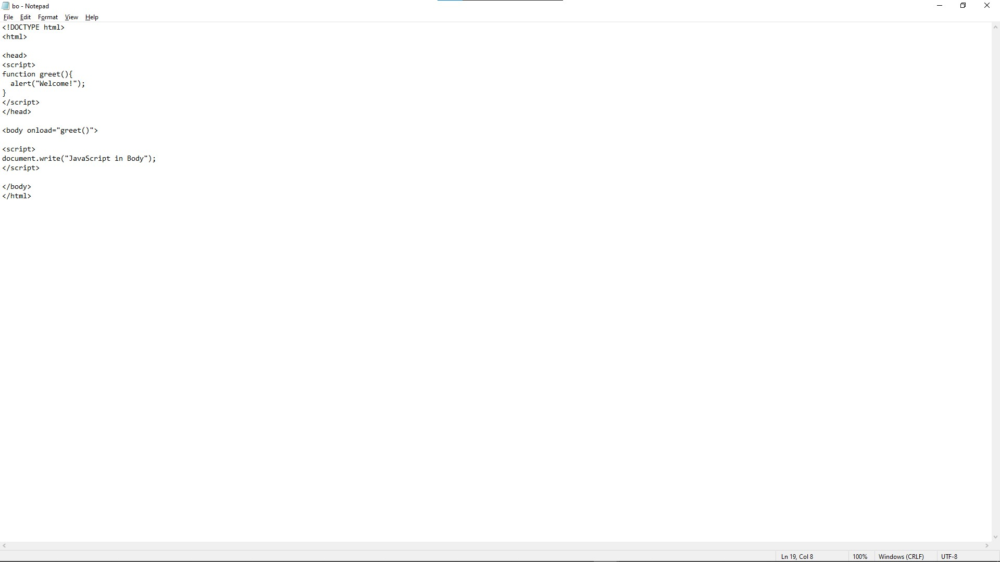
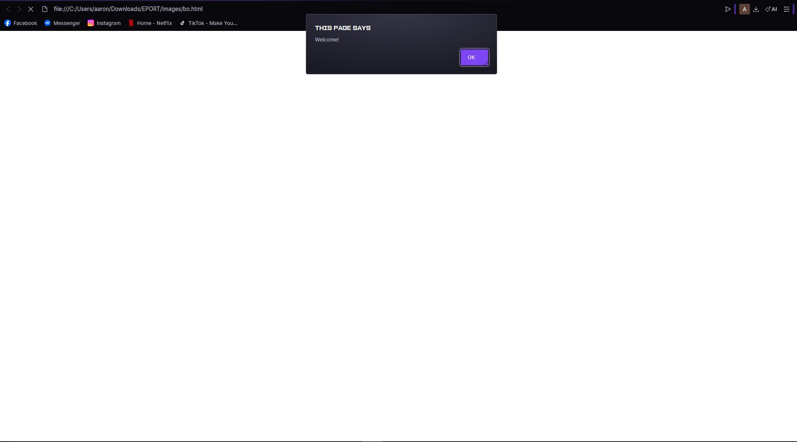
Lesson 3
Characteristics of JavaScript
1. Interpreted Language
It is an interpreted language due to the fact that it requires a browser to run. JS was created to work together with HTML and requires a web browser in order to run. JS source code can easily be seen when you view the source code of a JS-enabled webpage.
2. Scripting Language
Scripting languages are treated like programming languages but they are normally created to perform simple repetitive tasks. They do not come with their own interfaces but they provide instructions to other programs on what to do. JS does not contain the program on how the whole webpage looks like, we can use it to change certain elements of the webpage through the browser.
3. Client-Side Scripting
There are basically two kinds of scripting for the web – client-side and server-side. The key difference between these scripts is the location to which they are executed. A server-side script is executed on the actual server machine that hosts the webpage while a client-side script is executed on the very machine that you are using.
4. Object-Oriented Programming
Another advantage of JS is that it presents many things as objects and lets you easily manipulate them. OOP is a programming style that treats every element in a system as an object. In OOP, each object has its associated functions called methods which are the things that objects know how to do.
The Key in Understanding JavaScript
1. Learn at an optimal pace and do a lot of practice.
2. Understand the concepts of objects.
Objects – are items that exist in the browser. The browser window, the page itself, the status bar, and the date and time stored in the browser are all objects.
Methods
Methods are actions to be performed on or by an object. Methods also represent functions that are designed for specific purposes like doing math or parsing strings.
Properties
Properties are an existing subsection of an object. It is also important to learn these basic concepts in programming.
Event
Something which happens or which is done such as loading a page, holding a mouse over a link, or clicking a link. You can actually write scripts and set them to execute when a specific event occurs.
Parameter
Data or other objects which describe the characteristics of an object.
Type
Type of variable such as integer, string, floating point or Boolean.
Type Conversion
The act of converting a variable from one type to another.
A script is a set of computer instructions or commands that puts together or connects existing components to accomplish a new related task. JS is a powerful scripting language used to create web functionalities. A text editor and a web browser are the tools needed in JS scripting. The basic components of JS are objects, methods and properties.
Commonly Used Properties and Methods
Window
The window object is the main object. Many of the window-object properties are objects in their own right such as document, frame, and location. There is no need to write the object name window since it is understood.
Sample:
- Location – to go to a new location
- Open – to open a new window
- setTimeout – to set a time interval before activating an event
Document
The document object is derived from the window object. It is the container for all HTML, HEAD and BODY objects associated within the HTML tags of the HTML documents. You need to write the object name to use these methods.
Sample:
- fgColor – to set the document foreground color
- cookie – to read the information stored in the cookie text file
- write – to display a message
- lastModified – to display the date it was last modified
Math
The math object provides the capability to perform math operations.
Sample:
- PI – has the value of PI
- pow(a,b) – takes the value of a to the power of b
- max(a,b) – returns the larger value between a and b
- min(a,b) – returns the smaller value between a and b
Navigator
The navigator object determines which browser is running.
Sample:
- appName – to determine the browser’s code name
- appVersion – to determine the browser’s release version
- cookieEnabled – to determine whether cookies are enabled or not
- platform – a description of the operating system
Structure of the Code Snippet
The JS is placed within the head tags of HTML, meaning JS is executed even before the body tags.
The script tags tell the browser that the lines of code within those tags are scripts. After closing the script tag, the browser will proceed with parsing normal HTML until it encounters another non-HTML script or instructions.
Parsing is the process of analyzing data (usually a string of text) and converting it into a structured internal format that the JavaScript engine can understand, manipulate, and execute.
The document object refers to the body tags of HTML while write is a method of the document object. This means that JS will write the contents between the parenthesis and quotes to the HTML document.
Syntax Guides
Rules in JavaScript Syntax:
- Include language="JavaScript" in the opening script tag.
- Syntax format: Object.Method() or Object.Property()
- JavaScript is case-sensitive.
- Scripts are processed from top to bottom.
- Quotes tell the browser what text should be displayed.
- Quotes may be single (' ') or double (" ").
- Use // for single line comments.
- Use /* */ for multiple line comments.
- Use + to concatenate a string.
- Statements may contain a semicolon ;
JavaScript Variables
Variable – a symbolic representation denoting a quantity or expression. It represents a place where a quantity can be stored. It is a container that contains a value which can change as required.
Data Types
- Character – any single character or symbol
- String – combination of characters
- Integer – whole numbers
- Float (double) – decimal numbers
- Boolean – TRUE or FALSE values
- Function – set of instructions
- Object – items that exist in the browser
- Array – object that contains a set of values
- Undefined – variable without a value
- Null – variable defined but assigned null
Declaring Variables
Variables are declared with a var statement. It is always good practice to pre-define variables using var. If declared inside a function, it can be accessed anywhere within the function.
//declaring one variable var firstname //declaring several variables var firstname, lastname; //declaring one variable and assigning a value var firstname="Crispin"; //declaring several variables and assigning a value var firstname="Basilio", lastname="Santiago";
Rules for Naming Variables
- Variables can contain letters, digits, and underscore.
- No spaces between characters.
- No punctuation characters.
- The first character cannot be a digit.
- Variable names are case-sensitive.
Browser Output
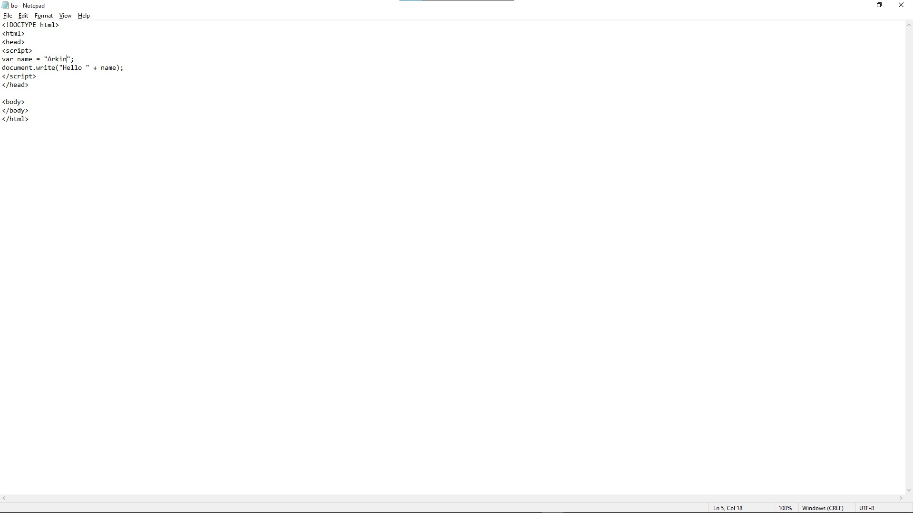
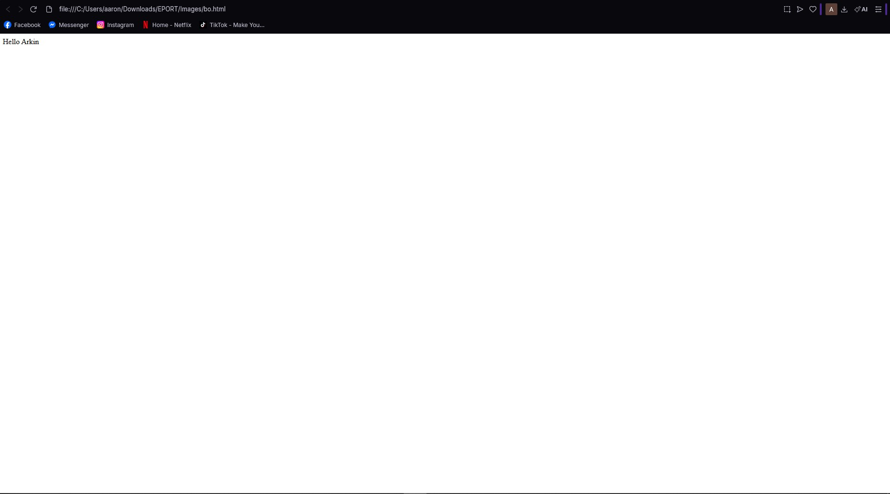
Lesson 4
What are Events?
Events are actions that are triggered either by mouse click, function calls, keyboard strokes, loading of images, submitting an HTML form, etc. Events are usually used in connection with functions. Functions will not work without a force that will trigger it.
Table of Event Triggers
- onabort – The loading of an image is interrupted.
- onblur – An element loses focus.
- onchange – The user changes the content of a field.
- onclick – Mouse click of an object.
- ondblclick – Double mouse click on an object.
- onerror – An error occurs when loading a document or image.
- onfocus – An element gets focus.
- onkeydown – A keyboard key is pressed.
- onkeypress – A keyboard key is held down.
- onkeyup – A keyboard key is released.
- onload – A page or image is finished loading.
- onmousedown – A mouse button is pressed.
- onmousemove – A mouse is moved.
- onmouseout – The mouse is moved off an element.
- onmouseover – The mouse is moved over an element.
- onmouseup – A mouse button is released.
- onreset – The reset button is clicked.
- onresize – A window or frame is resized.
- onselect – Text is selected.
- onsubmit – The submit button is clicked.
- onunload – The user exits the page.
onload and onunload
The onload and onunload events are triggered when a user enters or exits a web page. The onload event can be used to check the web browser type and version. These events can also be used to store and retrieve cookies. A cookie is a message given to a web browser.
onfocus, onblur and onchange
These attributes are often used with the validation of fields in a form.
onsubmit
This attribute is used to validate all fields in the form before submitting it.
<form method="post" action="trial.htm" onsubmit="return checkFields()">
When the submit button is clicked, it will call the function checkFields(). The function will check all the fields in the form. If everything is correct, it returns true so the form will be submitted. Otherwise it returns false and the form submission will be cancelled.
onmouseover and onmouseout
These attributes are usually used for animation purposes. For example, when the mouse is placed over a button or link, it may display a different image. When the mouse is removed, the button returns to its original form.
onclick
This is commonly used to connect to another webpage or to trigger an event. For example, when a button is pressed it can activate a function that opens a popup box.
What are Popup Boxes?
Popup boxes are windows that appear on the screen. They may appear before a page loads, after an event happens, or before leaving a page. JavaScript has three kinds of popup boxes:
- Alert box
- User-input prompt box
- Confirm box
These popup boxes are useful for warning users, gathering input, or confirming actions.
Alert Box
This is used to display warning messages or greetings.
alert("message");
<script type="text/javascript">
function show_alert()
{
alert("WARNING! WARNING!");
}
</script>
When the button is clicked, an alert popup message will appear.
User-Input Prompt Box
This is used when you want the user to enter information before continuing.
prompt("message","defaultvalue");
function show_prompt()
{
var name = prompt("Please enter your name:","nameless");
if(name!=null && name!="")
{
document.write("Welcome " + name + "! Please come in");
}
}
The user input is stored in the variable name and then validated.
Confirm Box
Used when the user must confirm or accept something.
confirm("message");
If the user clicks OK, the result is true. If Cancel is clicked, the result is false.
What is a Variable?
A variable is a temporary storage for values and expressions. Expressions are formulas that use numbers and mathematical symbols. Example: x = 1 + 3
The value of x will be 4.
Rules for Variables
- Variable names are case-sensitive.
- Names must begin with a letter or underscore.
- The rest of the name may contain letters, numbers or underscores.
- Avoid using reserved JavaScript words.
- Variables can hold numbers, expressions or string literals.
Example of Variable Declaration
var x = 5; var y = x + 5; var fan = "Standard"; var isDone = false;
Arithmetic Operators
- + Addition
- - Subtraction
- * Multiplication
- / Division
- % Modulus
- ++ Increment
- -- Decrement
Modulus (%) calculates the remainder after division.
Comparison Statements
- == equal to
- === equal value and type
- != not equal
- !== not equal value or type
- > greater than
- < less than
- >= greater than or equal
- <= less than or equal
Logical Operators
- && AND
- || OR
- ! NOT
Logical operators determine relationships between expressions or values.
Conditional Operator
variablename = (condition) ? value1 : value2;Example:
myFavorite = (color=="pink") ? "Terrific" : "Change color";
Conditional Statements
- if statement
- if-else statement
- if-else if-else statement
- switch statement
Example of if Statement
if (coins==5)
{
document.write("Buy the Orange!");
}
Example of if-else Statement
if (coins==5)
{
document.write("Buy the Orange");
}
else if (coins<4)
{
document.write("Buy the Apple");
}
else
{
document.write("Buy nothing");
}
Switch Statement
The switch statement works similarly to the if statement but is used when selecting one option among many. The break statement is used to prevent the program from executing other cases after a match is found.
Browser Output
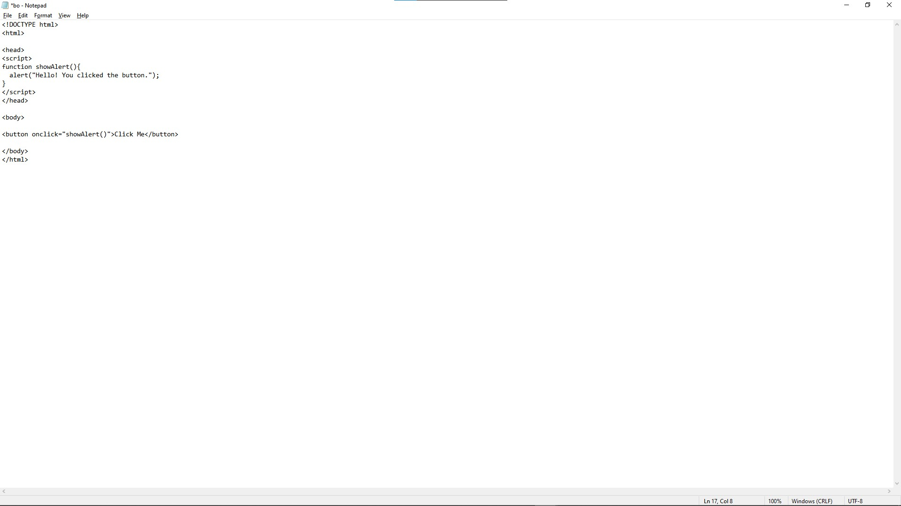
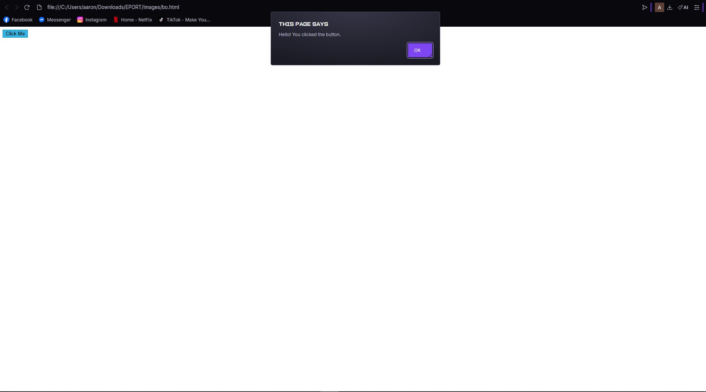
AP Lessons
Lesson 1: Demand
Konsepto ng Demand
- Tumutukoy sa dami ng produkto o serbisyo na gusto at kayang bilhin ng mga mamimili sa isang takdang presyo at partikular na panahon.
- Ang kakayahan at kagustuhan ng tao na makamit at bilhin ang isang serbisyo o produkto ay nagtatakda ng pangangailangan at kagustuhan.
Kaugnayan ng Presyo sa Demand ng Tao
Ang presyo ay pinakamahalagang determinante sa dami ng demand.
Batas ng Demand
Kapag tumataas ang presyo, bumababa ang dami ng gusto at kayang bilhin, at kapag bumababa ang presyo, tataas naman ang dami ng gusto at kayang bilhin. (Ceteris Paribus)
Ceteris Paribus
Ipinagpapalagay na ang presyo lamang ang salik na nakaaapekto sa pagbabago ng quantity demanded habang ang ibang salik ay hindi nagbabago.
Economic Indicators
- Substitution Effect: Kapag tumataas ang presyo ng isang produkto, hahanapin ng mga mamimili ang pamalit na mas mura.
- Income Effect: Mas malaki ang halaga ng kinikita kapag mas mababa ang presyo.
Mathematical Formula
Demand = Kagustuhan + Pangangailangan
Demand Function
Qd = a - bP
- Qd = dami ng demand
- a = dami ng demand kung presyo ay 0
- P = presyo
- b = slope ng demand function
Demand Schedule
Tsart na nagpapakita ng bilang ng mga kalakal o serbisyo na hinihiling sa mga tiyak na presyo at ugnayan sa pagitan ng presyo at halaga ng kalakal.
Demand Curve
Grapikong representasyon ng batas ng demand. Isang linya na nagpapakita ng negatibong relasyon ng presyo at bilang ng produktong handang bilhin ng mamimili.
Mga Salik ng Demand
- Kita ng mga Mamimili
- Populasyon
- Panlasa
- Substitute Products
- Inaasahan ng mga Mamimili
- Panahon o Klima
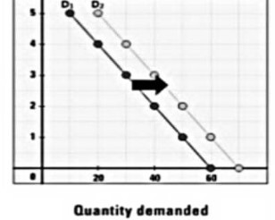
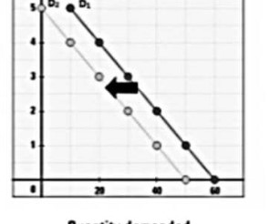
Lesson 2: Supply
Konsepto ng Supply
Dami ng produkto o serbisyo na gustong ibenta ng mga prodyuser sa isang takdang presyo at partikular na panahon.
Ugnayan ng Presyo sa Supply ng Mga Produkto
Pinakamahalagang nagtatakda (determinant) sa dami ng supply ay ang presyo.
Batas ng Supply
Kapag tumataas ang presyo, tataas ang dami ng gusto at kayang ibenta, at kapag bumababa ang presyo, bababa naman ang dami ng gusto at kayang ibenta. (Ceteris Paribus)
Mathematical Formula
Supply = Pagnanais + Kakayahan
Supply Schedule
Talahanayang nagpapakita kung gaano karaming produkto o serbisyo ang nais gawin ng mga prodyuser.
Supply Curve
Grapikong representasyon kung gaano karaming produkto o serbisyo ang nais gawin ng mga prodyuser.
Supply Function
Isang mathematical equation na nagpapakita sa relasyon ng dami:
Qs = c + bP
- Qs = dami ng supply
- c = dami ng supply kung ang presyo ay 0
- P = presyo
- b = slope ng supply function - interval na pagbabago
Mga Salik ng Supply
- Pagbabago sa teknolohiya
- Pagbabago sa halaga ng mga salik ng produksyon
- Pagbabago sa bilang ng mga nagtitinda
- Pagbabago sa presyo ng kaugnay na produkto (Complementary at Substitute Products)
- Ekspektasyon ng presyo
- Okasyon/Tradisyon
- Panahon/Klima
- Dali ng pagkasira / pagkabulok ng isang produkto
- Kalamidad
- Subsidiya / tulong mula sa pamahalaan
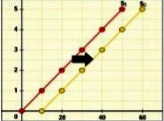
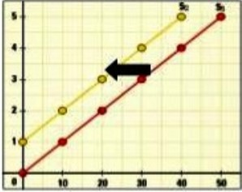
Lesson 3: Price Elasticity
Elastisidad
Pamamaraan ng pagsukat ng tugon ng mga mamimili at nagtitinda sa pagbabago ng presyo.
1. Elastisidad ng Demand
Pagsukat ng porsyento ng pagtugon ng mamimili sa pagbabago ng presyo.
2. Elastisidad ng Supply
Pagsukat ng porsyento ng pagtugon ng prodyuser sa pagbabago ng presyo.
Mga Uri ng Elastisidad
- Elastic: Ang demand o supply ay matatawag na price elasticity kapag mas malaki ang bahagda ng pagtugon ng quantity demanded/supplied kaysa sa bahagda ng pagbabago ng presyo. /E > 1/
- Di-Elastic: Maliit ang naging bahagda ng pagtugon ng demand/supply kaysa sa bahagda ng pagbabago ng presyo. /E < 1/
- Unitary: Pareho ang bahagda ng pagbabago ng presyo sa bahagda ng pagbabago ng quantity demanded. /E = 1/
- Ganap na Elastik: Ang pagbabago ng presyo ay nagdudulot ng infinite na pagbabago sa quantity demanded/supplied. /E = ∞/
- Di-Ganap na Elastik: Hindi tumutugon sa pagbabago ng presyo; kahit ang presyo ay bibilhin pa rin ang kaparehong dami ng produkto. /E = 0/
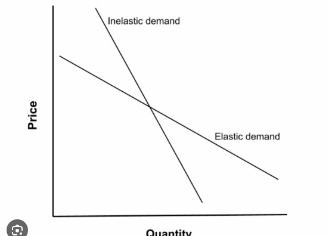
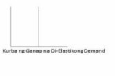
Lesson 4: Market Equilibrium
Market Equilibrium
Ito ay isang kalagayan na walang sinumang mamimili at nagbibili ang gustong baguhin ang kasalukuyang sitwasyon sa pamilihan. Ipinapakita ng ekwilibriyo ang pagkakasundo ng bumubili at nagbibili sa isang takdang presyo at dami ng produkto.
Talahanayan
Maaari ding makuha ang equilibrium price sa pamamagitan ng demand at supply function.
Tandaan
- Kung bumaba ang presyo, gaganahan ang mamimili na bumili at magkakaroon ng shortage dahil sa kakulangan ng supply.
- Kapag alinman sa isa ang tumaas o bumaba at hindi na ito balance, magkakaroon ng disequilibrium.
- Kung tumaas ang presyo, ang mga prodyuser ay gaganahang magprodyus ng marami, ngunit ang pagtaas ng presyo ay makakabawas sa kakayahan ng mamimili na bumili. Magkakaroon ng labis na supply o surplus.
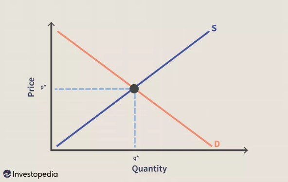
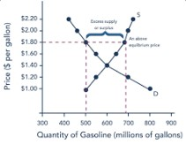
Lesson 5: Iba’t Ibang Estruktura ng Pamilihan
Pamilihan
- Ang pamilihan ay ang nagsisilbing tagpuan ng mga prodyuser at konsyumers.
- Ayon kay Adam Smith, may "invisible na kamay" (presyo) ang gumagabay sa prodyuser at konsyumer upang maisaayos ang pamilihan.
Istraktura ng Pamilihan
Tumutukoy sa balangkas na umiiral sa sistema ng pamilihan kung saan ipinapakita ang ugnayan ng konsyumer at prodyuser.
Ganap na Kompetisyon
- Maraming maliliit na konsyumer at prodyuser.
- Magkakatulad ang produkto.
- Malayáng paggalaw ng sangkap ng produksyon.
- Malayáng nakakapasok o nakakalabas sa industriya.
- Malayáng impormasyon ukol sa pamilihan.
Di-Ganap na Kompetisyon
Sa istrakturang ito ay may kakayahan na maimpluwensyahan ang presyo sa pamilihan.
Monopolyo
- Iisa lamang ang nagtitinda o kumokontrol.
- Walang direktang kapalit.
- Ang produkto ay lubhang mahalaga.
- May kakayahan hadlangan ang mga kalaban.
- Ang mga konsyumer ay napipilitang tanggapin ang pagiging makapangyarihan ng monopolista.
Monopsonyo
Mayroon lamang iisang konsyumer ngunit maraming prodyuser ng produkto o serbisyo.
Oligapolyo
Kaunti lamang ang prodyuser, ngunit marami ang konsyumer.
Monopolistikong Kompetisyon
- Marami ang prodyuser at konsyumer.
- May kakayahan ang prodyuser na magtakda ng sarili niyang presyo.
- Product Differentiation.
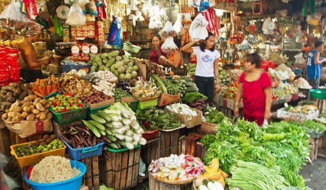
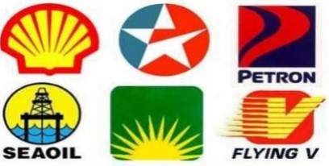
Lesson 6: Price Control
Bahaging Ginampanan ng Pamahalaan sa Regulasyon ng mga Gawaing Pangkabuhayan
Paraan ng pagkontrol sa presyo:
- Price Ceiling
- Price Floor
Price Control
Ang price control ay ang ipinatutupad ng gobyerno sa presyo ng mga bilihin at serbisyo upang mapanatili ang kanilang abot-kayang halaga o upang masiguro ang minimum na kita ng mga prodyuser.
Republic Act 7581
Kilala bilang Price Control Act. Layunin nito na maisagawa ng pamahalaan ang pagkontrol sa presyo ng mga bilihin.
National Price Coordination Council
Layunin nitong mabantayan ang presyo ng mga produkto pagkatapos magpalabas ng price ceiling ang pamahalaan.
Price Ceiling
- Pinakamataas na presyong itinakda ng pamahalaan upang ipagbili ang mga produkto.
- Isinasagawa upang protektahan ang mga mamimili laban sa abusadong negosyante.
- Itinakda mas mababa sa equilibrium price na umiiral sa pamilihan.
Price Freeze
Pagbabawal sa pagtataas ng presyo sa pamilihan. Ipinatutupad upang mapigilan ang pananamantala ng mga negosyante.
Floor Price
Pinakamababa na presyong itinakda ng pamahalaan upang ipagbili ang mga produkto.
Advantage ng Price Control
- Napananatili ang abot-kayang presyo para sa mga mamimili.
- Naipagtatanggol ang kapakanan ng mahihirap.
- Napananatili ang katatagan ng pamilihan.
Disadvantage ng Price Control
- Magkakaroon ng kakulangan ng supply.
- Mawawalan ng gana ang prodyuser na magtinda.
- Magkakaroon ng illegal na bentahan o black market.
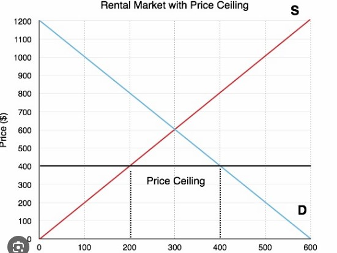
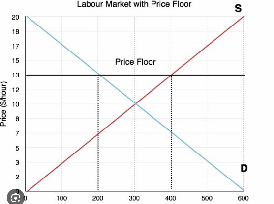